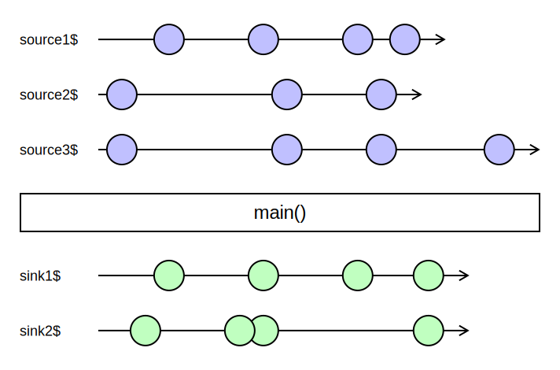
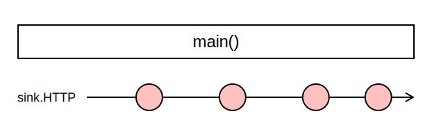
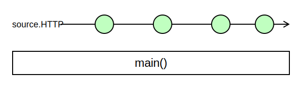
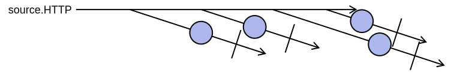
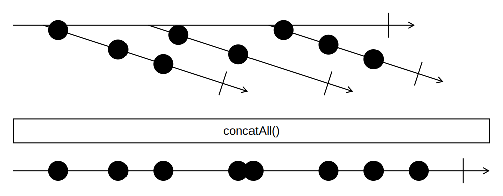
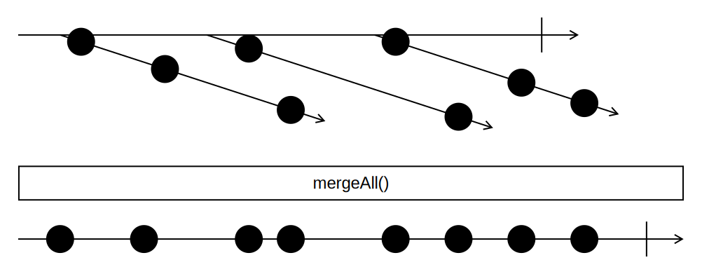
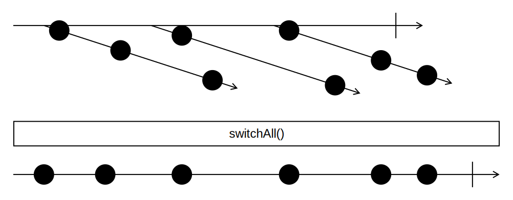
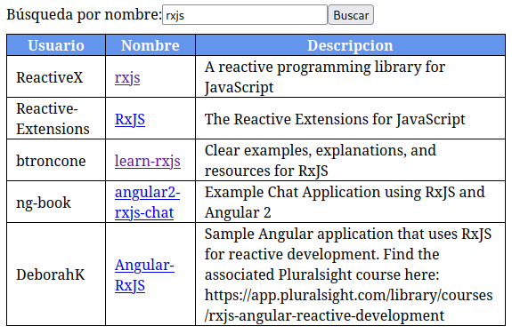

Comunicación con el servidor en Cycle.js
Programación Declarativa Aplicada
Máster en Ingeniería Informática
Facultad de Informática
Universidad Complutense de Madrid
Máster en Ingeniería Informática
Facultad de Informática
Universidad Complutense de Madrid
- El driver HTTP
- Envío de peticiones
- Recepción de respuestas
- Ejemplo
El driver HTTP
Recordatorio
- Un programa en Cycle.js es una función
main()que transforma sources en sinks.

Comunicación con el mundo exterior
- Hasta ahora, los sources y sinks de una aplicación tenían un significado particular:
- sources: eventos del DOM (
click,input, etc.) - sinks: DOM generado por la aplicación
- sources: eventos del DOM (
- A continuación vamos a estudiar otros tipos de sources y sinks.
Comunicación con el servidor
- Idealmente, podría encapsularse una petición al servidor en una función de JavaScript.
const infoEmpleado = obtenerInfoEmpleado(id); - Pero esto plantea varios problemas:
- Las llamadas al servidor no son funciones puras.
- Las peticiones dependen del estado del servidor (BD, etc.)
- Las llamadas al servidor pueden provocar efectos laterales.
- Las llamadas al servidor no son síncronas.
- El resultado de la función debe ser una promesa, o un observable.
- Las llamadas al servidor no son funciones puras.
Comunicación con el servidor
- Por este motivo, las aplicaciones en Cycle.js tratan al servidor como un agente del «mundo exterior», y se comunican con él mediante sources y sinks.
- Una aplicación puede utilizar sus sinks para enviar peticiones al servidor.
- Una aplicación puede utilizar sus sources para recibir respuestas a las peticiones del servidor.
Comunicación con el servidor
Recordatorio: drivers en Cycle.js
- En Cycle.js, los drivers son las funciones que:
- Se suscriben a los sinks emitidos por nuestra aplicación.
- Realizan los efectos laterales que sean pertinentes.
- Devuelven sources a nuestra aplicación.
- Ya conocemos el driver
DOM, que se encarga de capturar los eventos del DOM y de renderizarlo:function main() { ... } const drivers = { DOM: makeDOMDriver('#app') } run(main, drivers);
El driver HTTP
- Es un driver que se encarga de realizar peticiones HTTP/HTTPS a uno o varios servidores externos.
- Se crea mediante la función
makeHTTPDriver, definida en la biblioteca@cycle/http. - Incorporación al proyecto:
npm install @cycle/http - Creación del driver:
import { makeHTTPDriver } from '@cycle/http' ... const drivers = { DOM: makeDOMDriver('#app'), HTTP: makeHTTPDriver() }
El driver HTTP
- Con el driver ya incorporado, nuestra aplicación creará un observable con las peticiones que se deseen realizar, y se devolverá como sink:
function main(sources) { ... const dom$ = ...; const request$ = ...; return { DOM: dom$, HTTP: request$ }; }
Categorías
- Las peticiones al servidor pueden estar agrupadas en categorías.
- Cada petición al servidor puede ir asociada a una categoría, que es una cadena de texto.
- El driver adjuntará, a cada respuesta del servidor, la categoría de la petición correspondiente.
- De este modo, nuestra aplicación puede seleccionar las respuestas HTTP que pertenzcan a una determinada categoría.
Categorías
Envío de peticiones
El sink HTTP

- El sink HTTP emitido por nuestra aplicación es un observable cuyos valores emitidos pueden ser
- cadenas de texto, representando URLs, o bien
- objetos con detalles sobre la petición.
Atributos de una petición
Los objetos emitidos pueden tener los siguientes atributos:
url(string)
URL de la peticiónmethod(string)
Tipo de petición:GET,POST,PUT, etc.category(string)
Categoría correspondiente a la peticiónquery(objeto)
Valores enviados en la query string de las peticiones GET/POST
Ejemplo
const num$ = sources.DOM
.select('.cuadro_texto').events('input')
.pipe(map(evt => Number(evt.target.value)));
const boton$ = sources.DOM.select('.boton').events('click');
const request$ = boton$.pipe(
withLatestFrom(num$),
map(([_, num]) => ({
url: 'https://servidor.com/obtener_usuario',
method: 'GET',
query: { id: num, tipo: 'alumno' },
category: 'obtencion_usuario'
}))
);
return { dom: DOM$, HTTP: request$ };
- Cada vez que se pulsa un botón, se realiza una petición GET al servidor con la siguiente URL:
dondehttps://servidor.com/obtener_usuario?id=num&tipo=alumnonumes el valor contenido en el cuadro de texto.
Otros atributos de la petición
send(objeto o string)
Cuerpo de la petición (para peticionesPOST)headers(objeto)
Cabeceras de la petición HTTP (Content-Type,Accept,Authentication, etc.)
Más información:
Recepción de respuestas
Respuestas del servidor
- Se obtienen a través de los sources de la aplicación.
function main(sources) { // Obtiene todas las respuestas HTTP const response$ = sources.HTTP.select(); ... }o bienfunction main(sources) { // Obtiene todas las respuestas HTTP de una determinada // categoría const response$ = sources.HTTP.select('mi_categoria'); ... }
Filtrado de respuestas
- Además del método
select(), que permite filtrar las respuestas por categoría, podemos utilizar el métodofilter(), que permite filtrar respuestas en función de las peticiones que las originaron:const response$ = sources.HTTP .filter(request => request.url.startsWith('https://servidor.com'));
Observable de respuestas
- Hasta ahora hemos dibujado los observables provenientes del source
HTTPcomo observables que emiten las distintas respuestas del servidor.
- Pero esto no es así realmente. Los observables obtenidos a partir del source son observables de orden superior.
Observable de respuestas
- Dado el siguiente observable de peticiones HTTP,
- Se produce un observable de respuestas como el siguiente:

Observable de respuestas
- Cada observable interno comienza en el momento en el que se realiza la petición.
- Cuando llega la respuesta correspondiente del servidor, el observable interno la emite.
Observable de respuestas
- Para poder acceder a las respuestas de cada petición hay que aplanarl el observable.
- Recordemos que hay varias formas de aplanar un observable de orden superior:
concatAllmergeAllswitchAll
Recordatorio: concatAll
- El observable aplanado solo emite los eventos de un observable cuando ha finalizado de emitir los del observable anterior.

Recordatorio: mergeAll
- El observable aplanado emite los eventos tal y como van llegando a los observables internos.

Recordatorio: switchAll
- El observable aplanado cancela la suscripción anterior cada vez que se encuentra con un nuevo observable.

Contenido del observable de respuestas
- Cada respuesta es un objeto con varios atributos. Entre ellos:
text(string)
Cuerpo de la respuesta. Si es un JSON hay que aplicar la funciónJSON.parse().statusCode(numero)
Código HTTP devuelto por el servidor (200si no ha habido ningún error)
Contenido del observable de respuestas
- Otros atributos:
type(string)
Tipo MIME de la respuesta (por ejemplo,application/json)header(objeto)
Cabeceras de la respuestarequest(objeto)
Objeto petición que originó la respuesta
Ejemplo
Buscador de proyectos en GitHub

Captura de eventos
- Capturamos los eventos de modificación del cuadro de texto y los eventos de pulsación en el botón Mostrar.
const nombre$ = sources.DOM
.select('.nombre')
.events('input')
.pipe(map(evt => evt.target.value));
const boton$ = sources.DOM.select('.botonBuscar').events('click');
const comandoBuscar$ = boton$.pipe(
withLatestFrom(nombre$),
map(([_, nombre]) => nombre)
);
Emisión de peticiones
- Por cada acción lógica de búsqueda, lanzamos una petición a GitHub.
const peticion$ = comandoBuscar$.pipe( map(nombre => ({ url: 'https://api.github.com/search/repositories', method: 'GET', query: { q: `${nombre} in:name`, Término a buscar en el nombre per_page: 5 Obtener cinco resultados }, category: 'busquedaPorNombre' })) ); ... return { DOM: ..., HTTP: peticion$ };Por ejemplo, si el nombre es
rxjs:https://api.github.com/search/repositories?q=rxjs%20in:name&per_page=5
Recepción de respuestas
const resultado$ = sources.HTTP.select('busquedaPorNombre').pipe(
switchAll(), Aplanamos observable
map(response => JSON.parse(response.text)), Transformamos a JSON
map(json => json.items.map(item => ({ Obtenemos atributos relevantes
id: item.id,
name: item.name,
description: item.description,
owner: item.owner.login,
url: item.html_url }))),
startWith([]) La tabla de búsqueda comienza vacía
);
Renderizado de tabla
const dom$ = resultado$.pipe(
map(repos =>
<div>
Búsqueda por nombre:<input attrs={{ type: 'text' }} class={{ nombre: true }} />
<button class={{ botonBuscar: true }}>Buscar</button>
<table class={{ resultados: true }}>
<tr>
<th>Usuario</th><th>Nombre</th><th>Descripción</th>
</tr>
{
repos.map(repo =>
<tr>
<td>{repo.owner}</td>
<td><a attrs={{ href: repo.url }}>{repo.name}</a></td>
<td>{repo.description}</td>
</tr>
)
}
</table>
</div>
));
return { DOM: dom$, HTTP: peticion$ };
Bibliografía
- Cycle.js
Cycle.js HTML
https://cycle.js.org/api/http.html -
Sergi Mansilla
Reactive Programming with RxJS 5
https://ucm.on.worldcat.org/oclc/1345473207